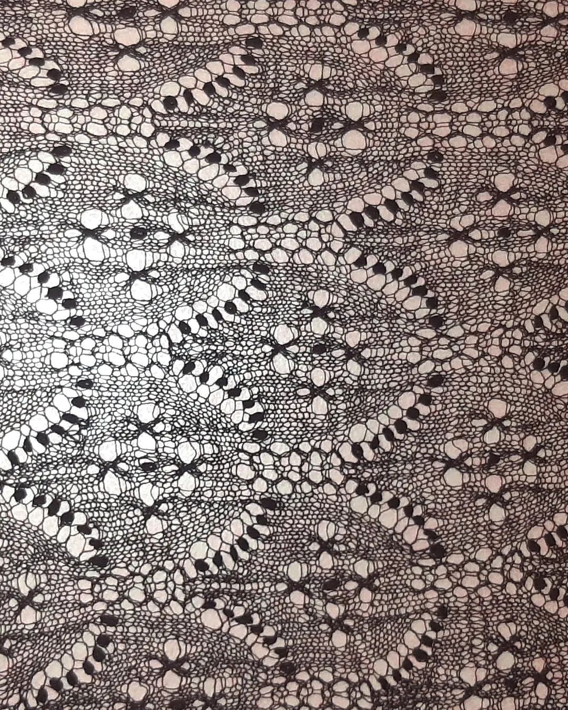

See on leht minu erinevatest kudumisprojektidest, kudumisportfoolio. Rohkem infot projektide kohta leiab minu Ravelryst.
Minu Ravelry: Klõpsa siia!
Tolmukakirjas haapsalu sall:
| Mustri nimi | Lõng | Varda suurus (mm) |
|---|---|---|
| Orhidee kiri | Hea - helelilla | 2.5 |
| Lipukiri | Midara - 520 | |
| Leili piibelehekiri | Hea - näkiroheline | 2.75 |
| Mardikakiri | Midara - 880 | |
| Tolmukakiri | Hea - tume šokolaad | |
| Kuninganna Silvia kiri | Hea - loodusvalge | |
| Bonnie Tyleri kiri | Midara - 400 | |
| Ümara lehe kiri | Hea - türkiissinine | 3 |
| Kokku salle: 8 | ||